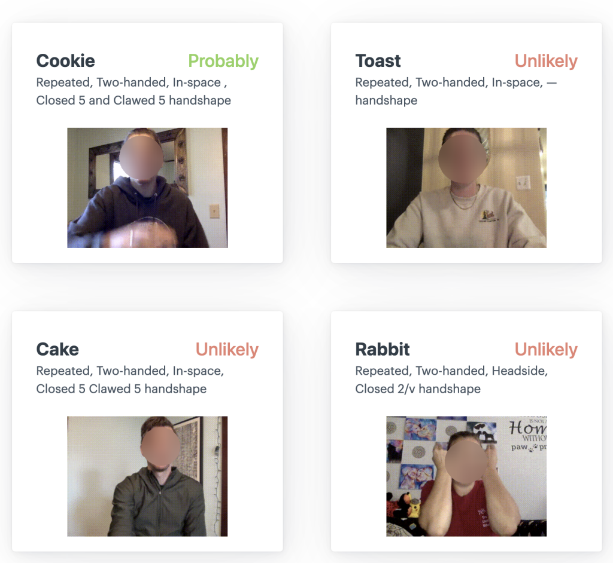

Chaelin Kim
Contact:
Email: ckim13@tulane.edu
Office: 309 Paul Hall,
Tulane University, New Orleans, LA, US
Links:


Hello! My name is Chae-Lin Kim.
I am currently pursuing a Ph.D. in Computer Science at Tulane University advised by Prof. Saad Hassan, where I focus on AI-based assistive technology.
My research interests include deep learning networks, particularly in the field of Human-Computer Interaction (HCI) and computer vision. I am passionate about developing technologies that enhance the quality of life.
I received both BS and MS in IT Engineering from Sookmyung Women's University.
Recent News
- Our poster and demonstration work has been accepted to ASSETS 2025!
Conference
|  |
Saad Hassan, Matyas Bohacek, Chaelin Kim, Denise Crochet The 22nd International Web for All Conference (W4A 2025) |

|
Chae-Lin Kim, Ga-Eun Lee, Jiwoo Kang, Byung-Gyu Kim* IEEE International Conference on Consumer Electronics (ICCE) 2024 |
Journal

|
Chae Lin Kim, Byung-Gyu Kim* Journal of Real-Time Image Processing (Springer Nature), vol. 20:52 (Article number: 52), pp. 1-18, May 06, 2023 |
Projects
|
Funding: Ministry of SMEs and Startups, Rep. of Korea |
|
Funding: Ministry of Culture, Sports and Tourism (MCST) and from Korea Copyright Commission, Rep. of Korea |
|
Funding: Ministry of Science and ICT, Rep. of Korea (NRF) |
|
Funding: Ministry of SMEs and Startups, Rep. of Korea |